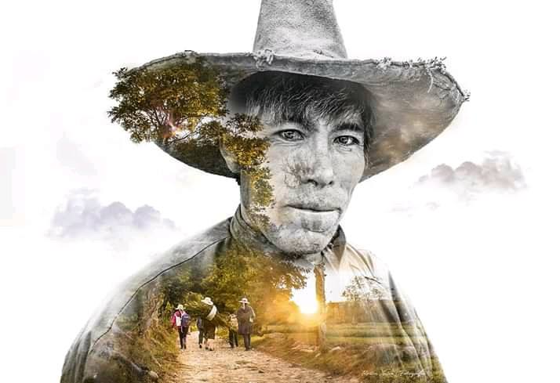

La gran variedad de desastres naturales que han ocurrido en el Perú ha generado numerosos impactos sociales, económicos y ambientales deviniendo en la necesidad de implementar mejoras en los planes de gestión de riesgos y desastres. El Perú es susceptible a sufrir dichos impactos a causa de movimientos telúricos. Por ello, surge la necesidad de evaluar la vulnerabilidad a través de una perspectiva integral que permita reflejar la situación social y física de un área específica. Por lo tanto, esta investigación tiene como objetivo contribuir a la mejora de los planes de gestión de riesgos y desastres; para ello, propone una metodología de análisis de vulnerabilidad global que integra la evaluación de la vulnerabilidad física (basado en las características físicas de la infraestructura) con la vulnerabilidad social como resultado de las principales variables sociodemográficas, seleccionadas en este estudio.
